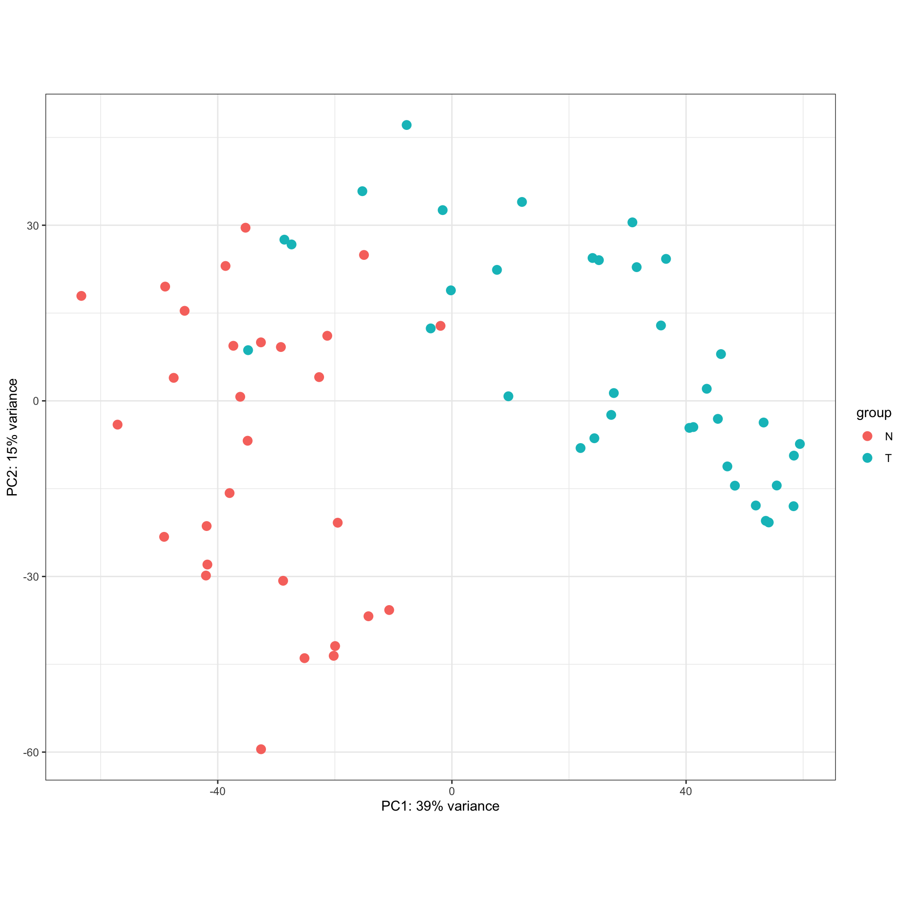

cpbnplot
Chapter 1 cpbnplot: Bayesian network plot for enrichment analysis results
The R package to plot Bayesian network inferred from expression data based on the enrichment analysis results including clusterProfiler or ReactomePA results (Wu et al. 2021; Yu and He 2016). It makes use of libraries including clusterProfiler, ReactomePA, bnlearn, graphite and depmap (Killian and Gatto 2021; Scutari 2010; Sales et al. 2012). The description of functions and several use cases are depicted in this book using GSE133624, which contains RNA-Seq data of bladder cancer and adjacent normal bladder tissues (Chen et al. 2019).
1.1 The preprocessing and DEG identification of GSE133624
In this book, the data from GSE133624 was used for the demonstrative purpose. DESeq2 is used to identify DEGs (Love, Huber, and Anders 2014).
library(DESeq2)
## Load dataset and make metadata
counts = read.table("GSE133624_reads-count-all-sample.txt", header=1, row.names=1)
meta = sapply(colnames(counts), function (x) substring(x,1,1))
meta = data.frame(meta)
colnames(meta) = c("Condition")
dds <- DESeqDataSetFromMatrix(countData = counts,
colData = meta,
design= ~ Condition)
## Prefiltering
filt <- rowSums(counts(dds) < 10) > dim(meta)[1]*0.9
dds <- dds[!filt,]
## Perform DESeq2()
dds = DESeq(dds)
res = results(dds, pAdjustMethod = "bonferroni")
## apply variance stabilizing transformation
v = vst(dds, blind=T)
vsted = assay(v)## Plot PCA of VST values
DESeq2::plotPCA(v, intgroup="Condition")+
theme_bw()
## Define the input genes, and use clusterProfiler::bitr to convert the ID.
sig = subset(res, padj<0.05)
cand.entrez = clusterProfiler::bitr(rownames(sig), fromType="ENSEMBL", toType="ENTREZID", OrgDb=org.Hs.eg.db)$ENTREZID
## Perform enrichment analysis (ORA)
pway = ReactomePA::enrichPathway(gene = cand.entrez)
pwayGO = clusterProfiler::enrichGO(cand.entrez, ont = "BP", OrgDb = org.Hs.eg.db)
## Convert to SYMBOL
pway = setReadable(pway, OrgDb=org.Hs.eg.db)
pwayGO = setReadable(pwayGO, OrgDb=org.Hs.eg.db)
## Store the similarity
pway = enrichplot::pairwise_termsim(pway)
## Define including samples
incSample = rownames(subset(meta, Condition=="T"))Additionally, for the gene set enrichment analysis, log2 fold change is obtained.
allEntrez = clusterProfiler::bitr(rownames(res), fromType="ENSEMBL", toType="ENTREZID", OrgDb=org.Hs.eg.db)
res$ENSEMBL <- rownames(res)
lfc <- merge(data.frame(res), allEntrez, by="ENSEMBL")
lfc <- lfc[order(lfc$log2FoldChange, decreasing=TRUE),]
geneList <- lfc$log2FoldChange
names(geneList) <- lfc$ENTREZID
pwayGSE <- ReactomePA::gsePathway(geneList)